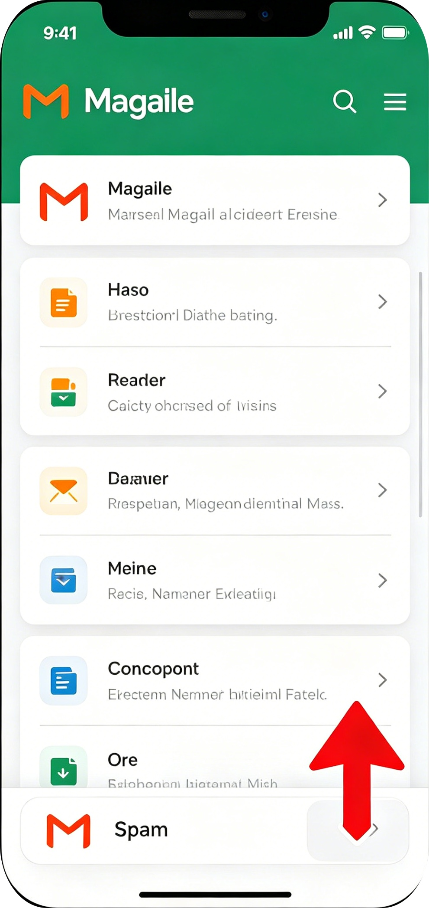
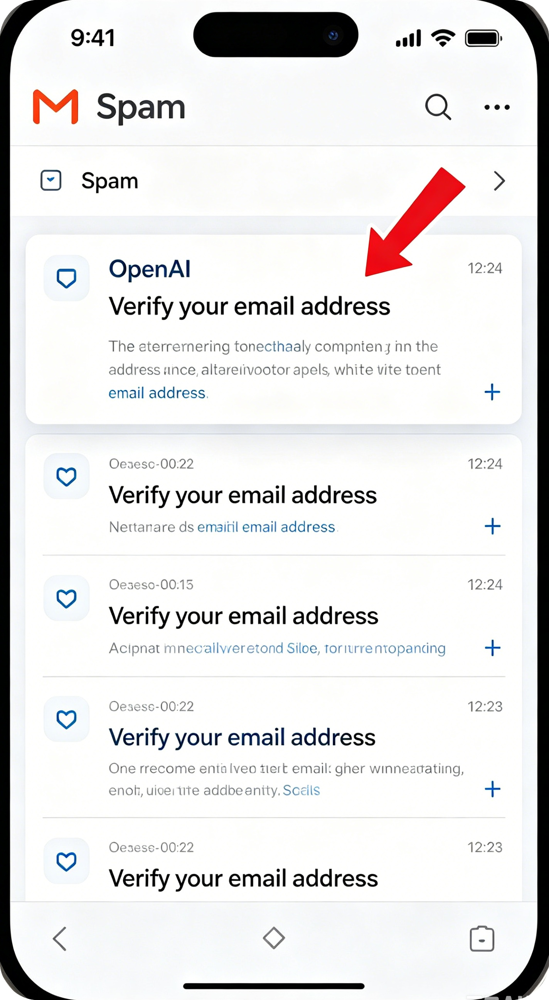
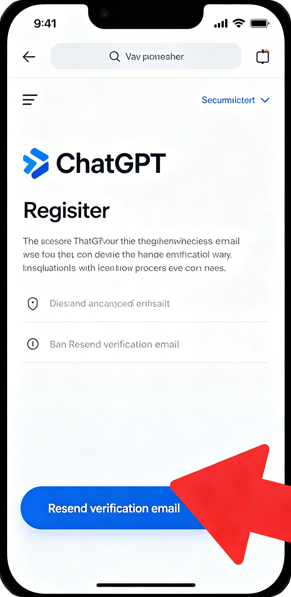
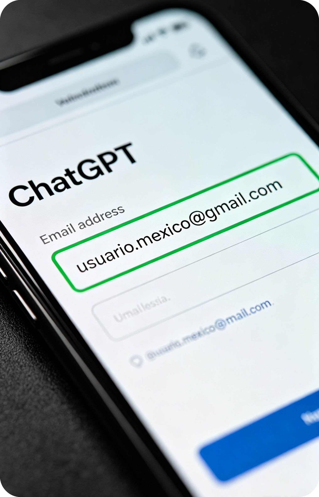
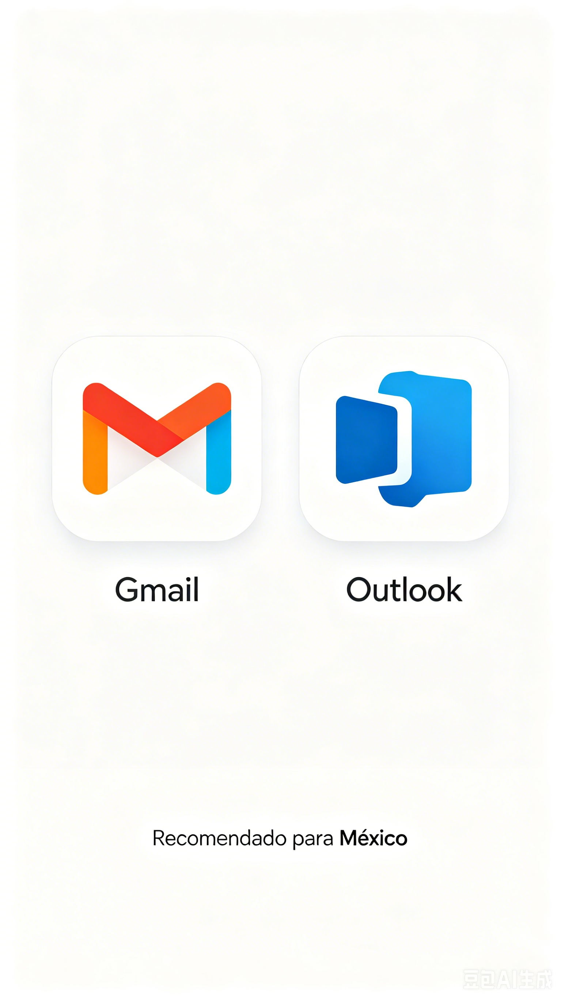
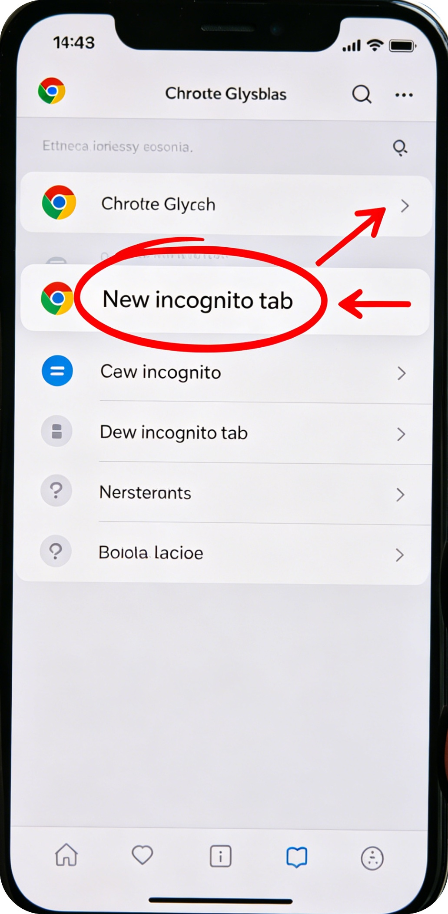
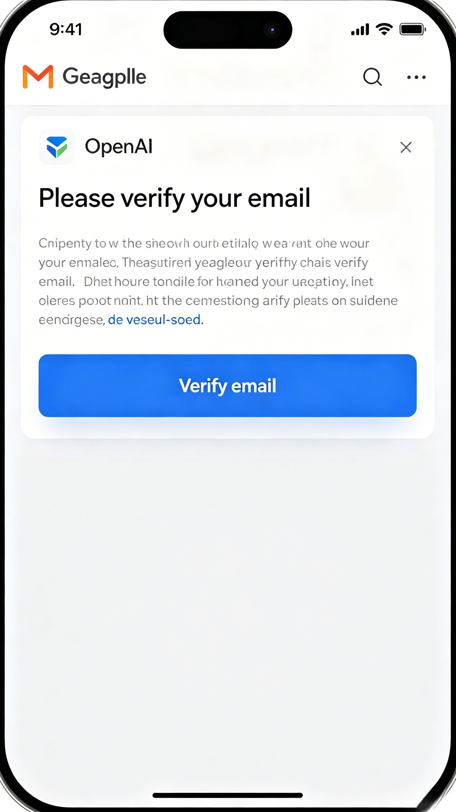

No llega el correo de verificación ChatGPT? (México)
Solución paso a paso con capturas de pantalla móviles.
Espacio publicitario
Paso 1: Revisa la carpeta de Spam

El correo de OpenAI suele ir automáticamente a la carpeta de Spam.
- Abre tu correo
- Busca “Spam” o “Correo no deseado”
- Busca mensajes de OpenAI
Paso 2: Encuentra el correo de OpenAI en Spam

El correo tendrá un título como “Verify your email” o “Confirmar tu correo”.
Ábrelo y haz clic en el enlace de confirmación.
Paso 3: Vuelve a enviar el correo

Si no encuentras el correo:
- Regresa a la página de registro de ChatGPT
- Haz clic en “Resend” o “Reenviar correo”
- Haz clic una sola vez (no repitas)
Paso 4: Verifica tu correo está bien escrito

Errores comunes que impiden recibir el mensaje:
- Letras o símbolos faltantes
- Dominio mal escrito (ej: gmail.con)
- Espacios al principio o al final
Paso 5: Usa Gmail o Outlook (recomendados)

Muchos correos locales bloquean los mensajes de OpenAI. Los más estables son:
- ✅ Gmail (recomendado)
- ✅ Outlook / Hotmail
Paso 6: Usa el modo incógnito (última solución)

Si nada funciona:
- Abre tu navegador (Chrome o Edge)
- Selecciona “Nueva ventana incógnito”
- Entra a chat.openai.com y vuelve a intentar con Gmail
¡Listo! Correo recibido

Cuando todo salga bien, verás el correo de OpenAI en tu bandeja de entrada. Haz clic en el enlace y listo.
Espacio publicitario
También te puede interesar
Crea tu cuenta sin errores, paso a paso.
Arregla problemas de región, verificación humana y más.
Espacio publicitario